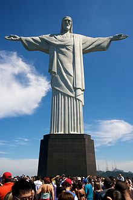

Great wall of China
The Great Wall of China is a series of fortifications made of stone, brick, tamped earth, wood, and other materials, generally built along an east-to-west line across the historical northern borders of China to protect the Chinese states and empires against the raids and invasions of the various nomadic groups of the Eurasian Steppe.

Petra
Petra originally known to the Nabataeans as Raqmu, is a historical and archaeological city in southern Jordan. The city is famous for its rock-cut architecture and water conduit system. Another name for Petra is the Rose City due to the color of the stone out of which it is carved.

Christ the Redeemer
Christ the Redeemer is an Art Deco statue of Jesus Christ in Rio de Janeiro, Brazil, created by French sculptor Paul Landowski and built by the Brazilian engineer Heitor da Silva Costa, in collaboration with the French engineer Albert Caquot

Machu Pichu
Machu Picchu is a 15th-century Inca citadel situated on a mountain ridge 2,430 metres (7,970 t) above sea level.[1][2] It is located in the Cusco Region, Urubamba Province, Machupicchu District in Peru,[3] above the Sacred Valley, which is 80 kilometres (50 mi) northwest of Cuzco and through which the Urubamba River flows.
Chichen Itza
Chichen Itza often with the emphasis reversed in English to at the mouth of the well of the Itza people") was a large pre-Columbian city built by the Maya people of the Terminal Classic period. The archaeological site is located in Tinúm Municipality, Yucatán State, Mexico.

Colosseum
The Colosseum or Coliseum (/kɒləˈsiːəm/ kol-ə-see-əm), also known as the Flavian Amphitheatre .It is an oval amphitheatre in the centre of the city of Rome, Italy.
Taj Mahal
The Taj Mahal meaning Crown of the Palace[4]) is an ivory-white marble mausoleum on the south bank of the Yamuna river in the Indian city of Agra.
Great Pyramid Of Giza
The Great Pyramid of Giza (also known as the Pyramid of Khufu or the Pyramid of Cheops) is the oldest and largest of the three pyramids in the Giza pyramid complex bordering what is now El Giza, Egypt.